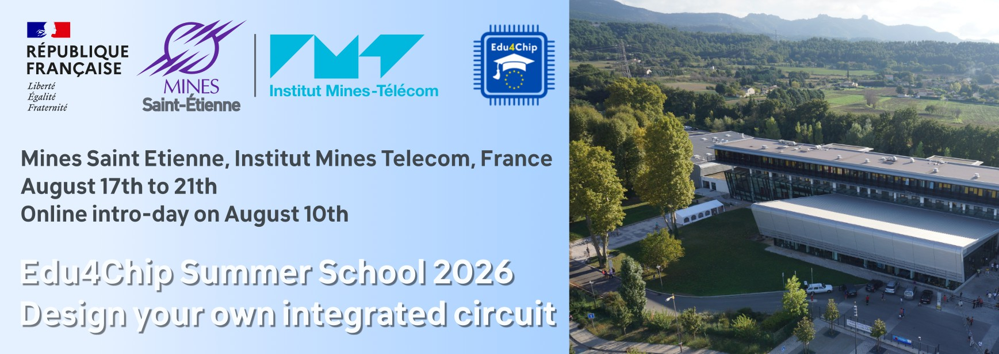
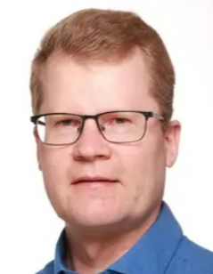
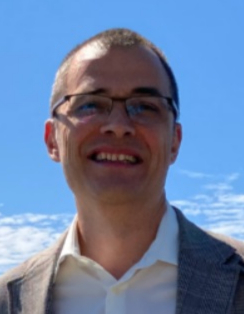
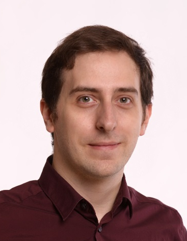

Overview
Welcome to the Edu4Chip Summer School 2026 on Chip Design. The summer school provides an introduction to the chip design process, from Integrated Circuit (IC) specifications to layout drawings. Participants will design their own logic block to be embedded in an IC. The entire project will be sent to be manufactured. Through courses, trainings, and both academic and industrial keynotes, participants will acquire foundational knowledge of chip design workflows, develop skills in tools and methodologies, and explore cutting-edge developments in the field.
The summer school is organized by the Institut Mines-Télécom (IMT) in collaboration with Edu4Chip partner institutions and will take place in France at the Campus Aix-Marseille Provence of Mines Saint-Etienne in the beautiful South of France, between Aix-en-Provence and Marseille.
The summer school is structured into two main parts:
- An online intro-day (August 10th) - Covering fundamental concepts in chip and digital design, with interactive exercises and project introductions.
- An in-person program (August 17th to 21st) - Held at Mines Saint-Etienne in France, featuring in-depth lectures, hands-on activities, keynotes, and social events.
Students from the Edu4Chip partner universities are welcome to attend, as are students from other EU universities.
Target audience and scope
The summer school is designed for Bachelor students and Master students with a background in electrical engineering, computer science and engineering, or physics, the summer school emphasizes practical learning activities. PhD students are also welcome. Participants will acquire foundational knowledge of chip design workflows, develop skills in tools and methodologies, and explore cutting-edge developments in the field.
ECTS credit transfer and financial support
The Edu4Chip Summer School is organized within the framework of the Erasmus Blended Intensive Program (BIP), which allows for credit transfer among participating institutions. Upon successful completion within the BIP, students can be awarded 3 ECTS credits.
For details on financial support options, especially for students from Erasmus partner institutions and Edu4Chip partners, please refer to the Financial Support section.
Practical information
Please find below some practical information related to location, accommodation, and transport.
Location
The Edu4Chip 2026 Summer School will take place at the Campus Aix-Marseille Provence (IMT/MSE) in Gardanne, a town located between Aix-en-Provence and Marseille (in the south of France).
- Venue: Mines Saint-Etienne, Campus Aix-Marseille Provence
- Address: 880, avenue de Mimet, 13541 Gardanne, France
Accommodation
IMT does not offer on-campus accommodation for summer school participants. Each student is responsible for arranging their own accommodation independently. We recommend searching through popular platforms such as Booking.com, Airbnb, or similar services to find lodging that fits your preferences and budget. However, we recommend reserving your accommodations in Aix-en-Provence. For your convenience, we will most likely organize shared transportation between Aix and Gardanne.
Important: In general, public transport is feasible from either location. See the next section for more information about transportation options.
Transport
If you're arriving from abroad, the nearest airport is Marseille Provence (MRS), which has frequent bus service to Aix city center. The journey typically takes around 35 minutes, and during the day, there is one bus every 30 minutes.
The summer school venue in Gardanne is connected to the train station in Aix (or Marseille) and several bus lines. The train ride from Aix to Gardanne takes approximately 10 minutes. Then, a bus service runs from the train station to the campus.
Useful tips
Bring your laptop and charger: You will need a laptop for the summer school program. France uses Type E or C plugs (EU standard, 230 V), check if you need an adapter.
Dress smart for hot weather: Temperatures in Aix-en-Provence can be high at the end of August, and heavy showers are also possible during this period.
Other handy items: Sunscreen (you will need it), and a notebook/pen for quick notes and drafts.
Program and content
During the six-day program, which includes an introductory day online, participants will engage in lectures, hands-on exercises, and keynotes delivered by leading academics and industry experts. They will design their own logic block to be embedded in an integrated circuit. The entire project will be sent out for manufacturing. Through courses, training sessions, and academic and industrial keynotes, participants will acquire foundational knowledge of chip design workflows, develop skills in tools and methodologies, and explore cutting-edge developments in the field.
The Edu4Chip Summer School consists of two main parts: an online introductory day and an in-person program in Gardanne (5 days).
The program and schedule for the summer school will be announced in early 2026.
Student pre-registration
Participation in the Edu4Chip Summer School is free for students. Due to limited capacity, however, we require all interested students to pre-register. This process helps us create a diverse group of students from different institutions and backgrounds. The summer school is open to students from Edu4Chip partner universities (DTU, TUM, KTH, TAU, and IMT), as well as other EU universities.
For students of the Edu4Chip partner universities (DTU, TUM, KTH, TAU, IMT), pre-registration and selection will be handled by your home university. Students of the partner universities will soon be informed by their home university about how to pre-register.
Students from other EU or non-EU universities: applications to the Summer School are now close. If you applied, you should have received an answer by now.
Student financial support
To support student participation in the Edu4Chip Summer School from countries outside France, two financial support options are available to help cover travel and accommodation costs.
Support via Erasmus+ Blended Intensive Program (BIP)
The support via Erasmus+ Blended Intensive Program (BIP) is available to students from any IMT Mines Saint-Etienne Erasmus+ partner institutions. This support helps cover travel, accommodation, and other expenses for eligible participants.
Eligibility: Students enrolled at IMT Mines Saint-Etienne Erasmus+ partner institutions. In the context of Edu4Chip, these are KTH Royal Institute of Technology, Technical University of Munich (TUM), and Tampere University (Finland). However, students from other institutions that are Erasmus+ partners of IMT Mines Saint-Etienne might be eligible for this support. Please contact your institution's international/Erasmus office for application details and procedures.
Support via Edu4Chip
The Edu4Chip project can provides financial support for students from Edu4Chip partner institutions to cover travel, accommodation, and other expenses related to the participation in the summer school.
Eligibility: Students from all Edu4Chip partner universities.
More information and applications
If you are from one of the Edu4Chip partners, see the contact person in your institution below. If you are from another university, you might still be eligible for support via Erasmus+ Blended Intensive Program (BIP), if your institution is an Erasmus+ partner of IMT Mines Saint-Etienne. Please contact your institution's international/Erasmus office for application details and procedures.
For students from the Technical University of Munich (TUM):
| Contact person: PD Dr.-Ing. habil. Michael Pehl Mail: m.pehl@tum.de Phone: +49 (89) 289 - 28252 Homepage: Link to homepage |
For students from KTH Royal Institute of Technology:
| Contact person: Prof. Ahmed Hemani Mail: hemani@kth.se Phone: +46 8 790 44 69 Homepage: Link to homepage |
For students from Tampere University (TAU):
|
 |
Contact person: Prof. Timo Hämäläinen Mail: timo.hamalainen@tuni.fi Phone: +35 8408490777 Homepage: Link to homepage |
For students from Institut Mines-Télécom (IMT):
|
 |
Contact person: Prof. Jean-Max Dutertre Mail: dutertre@emse.fr Phone: +33 (0)4 42 61 67 36 Homepage: Link to homepage |
For students from the Technical University of Denmark (DTU):
|
 |
Contact person: Assoc. Prof. Luca Pezzarossa Mail: lpez@dtu.dk Homepage: Link to homepage |
We encourage all interested students to apply early to secure funding support.
Apply as DTU student
Target audience (DTU)
The summer school is aimed primarily at late BSc/BEng students and early MSc students with an interest in chip design, digital systems, or microelectronics. However, anyone with a relevant background and interest in the topic is encouraged to apply.
Costs and support(DTU)
Participation in the summer school itself is free. However, students are responsible for arranging and covering the expenses of their own travel and accommodation.
Getting ECTS from the summer school (DTU)
We are planning to integrate the summer school into a DTU 3-week special course worth 5 ECTS, where participation in the summer school is a component of the course. This allows students to extend the experience with additional work and obtain academic credit. The course will be in the elective category.
How to apply, deadline, and selection criteria (DTU)
If you are interested in participating, please send your application by email to Luca Pezzarossa at lpez@dtu.dk by March 29th, 2026
In your email, please include:
- Your study line/program
- Your current semester
- Your weighted grade average and number of completed ECTS credits
- If you are a BSc/BEng student, include information for your current degree only
- If you are an MSc student, include the information for both your current MSc degree and your previous BSc/BEng degree
- Whether you plan to take the associated 5-ECTS special course
Participation is limited. Selection will be based on:
- Eligibility within the relevant DTU study programs. These include:
- - Software Technology (BSc)
- - Computer Engineering (BSc)
- - General Engineering (BSc)
- - Electrical Engineering (BSc)
- - Software Technology (BEng)
- - Computer Engineering (BEng)
- - Electrical Engineering (BEng)
- - Computer Science and Engineering (MSc)
- - Electrical Engineering (MSc)
- - Mathematical Modelling and Computation (MSc)
- - Autonomous Systems (MSc)
- - Human-centered artificial intelligence (MSc)
- - Communication Technologies and System Design (MSc)
- Ranking primarily based on weighted grade average.
- Priority may be given to students who plan to take the 5-ECTS special course, as this indicates a stronger commitment to integrating the summer school into their study plan.
Questions and contacts
If you have any questions about the Edu4Chip Summer School, feel free to reach out to us. Whether you need more information about the program, registration process, participation grants, or logistics, we are here to help!
| Contact person: Prof. Jean-Max Dutertre Mail: dutertre@emse.fr Phone: +33 (0)4 42 61 67 36 Homepage: Link to homepage |